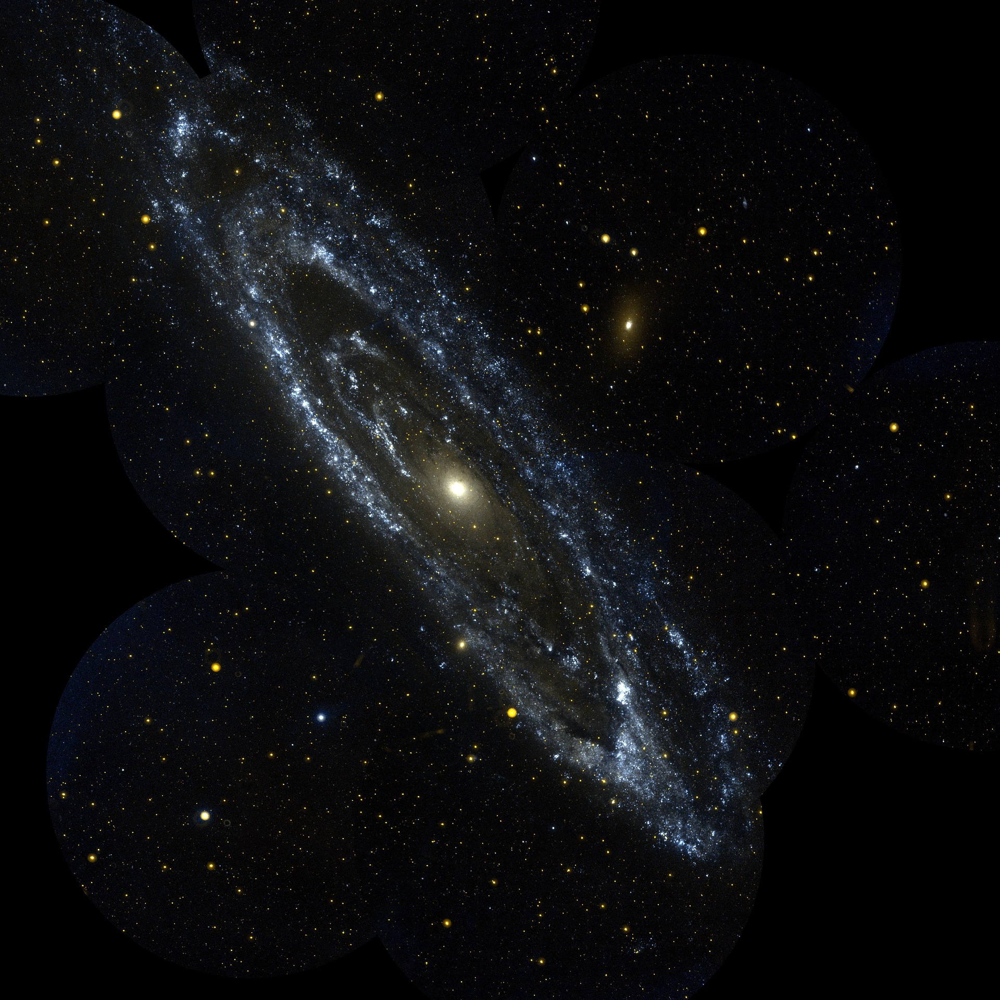

Featured Story

Our Neighbor in the Cosmos: The Andromeda Galaxy
The Andromeda Galaxy is one of the closest major galaxies to the Milky Way and contains billions of stars. Studying nearby galaxies like Andromeda can help scientists better understand how galaxies form and change over time.
Even our closest galactic neighbor is millions of light-years away.
Latest Space News
The light we see from the Andromeda Galaxy has traveled through space for more than two million years.
NASA Continues Preparing for Future Moon Missions
NASA continues to develop new technology and mission plans for future exploration of the Moon and beyond.
James Webb Space Telescope Studies the Universe
The James Webb Space Telescope continues to help scientists study distant stars, galaxies, and planets in greater detail.
STEM News
New Discoveries in Science and Technology
Researchers around the world continue to make new discoveries in science, technology, engineering, and mathematics.
Explore research from the National Science Foundation
Exploring the World of Particle Physics
Scientists at CERN study some of the smallest particles in the universe to better understand how matter and energy work.
Upcoming Launches
| Mission | Date | Organization | Destination |
|---|---|---|---|
| Artemis II | 2026 | NASA | Moon |
| Europa Clipper | In Progress | NASA | Jupiter System |
| JUICE | In Progress | ESA | Jupiter System |
Featured Mission Video
Learn more about the Nancy Grace Roman Space Telescope and its mission to explore the universe.
Contact & Feedback
Have a question, suggestion, or story idea? Send us a message below.